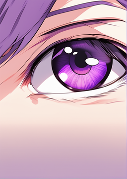

A student named Septo who harbors deep emotion which he believes an anger is seeking revenge to his former bullies in the past. As he plots his revenge against them, he becomes increasingly distant and cold, shutting himself off from everyone in his class.
Unbeknownst to Septo, he remains unaware of the futility of seeking revenge. He now plans to involve one of his classmates, hoping it will bring excitement and potentially change something.
As the story unfolds, Septo's single-minded pursuit of revenge clashes with unexpected revelations, leading him to question the true worth of his actions.